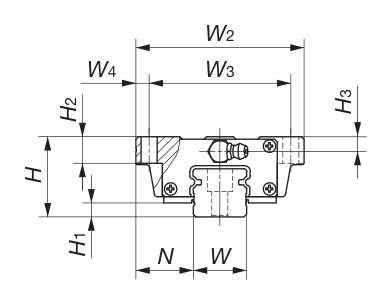
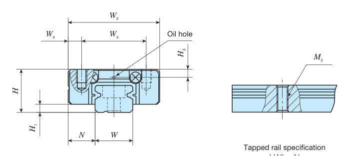
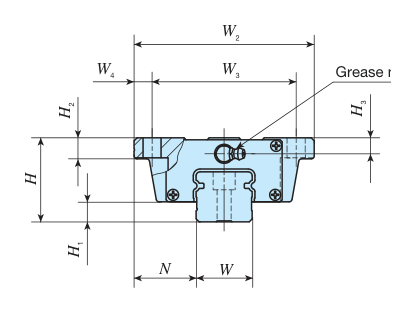

Linear Motion · Linear Guide (Linear Way)
궤도 레일(Track rail) 위를 볼이 순환하는 슬라이드 유닛(블록)이 직선 이동하는 구름 안내 기구입니다. 업계에서는 흔히 ‘LM 가이드’(THK 상표명에서 유래)라고 부르며, 둥근 축 위를 움직이는 리니어 부시와 달리 사각 레일을 사용해 상하·좌우 하중과 모멘트를 함께 지지하는 고강성 가이드입니다.
아래 탭에서 IKO(Nippon Thompson) Linear Way 블록 계열별 규격을 확인하세요. LWH(고강성형)·LWL(미니어처형)·LWE(컴팩트형) 3개 계열을 다룹니다. 2열 볼이 레일 궤도에 4점 접촉하는 구조로, 하중 방향이 바뀌거나 복합 하중이 걸려도 안정적인 정밀도·강성을 유지합니다. 블록·레일은 형번 체계상 별도 품목이므로 발주 시 각각 지정해야 합니다.
형번 또는 치수 일부만 입력해도 검색됩니다.
LWH(고강성형)·LWHG(롱 블록)입니다. 가장 큰 볼과 가장 긴 블록 길이를 가진 최고강성·최대하중 계열로, 플랜지가 블록 상부 넓게 돌출된 형태입니다.
IKO 공식 카탈로그 규격 도면(Flange type mounted from bottom, B-94p)

H(조립 높이) · W2(블록 폭) · W3(블록 체결 구멍 좌우 간격) · W4 · H2·H3(플랜지 두께) · L1(블록 길이) · L2(블록 체결 구멍 전후 간격) · N(블록 측면~레일 측면) · W(레일 폭) · H4(레일 높이) · F(레일 고정 구멍 피치) · E(레일 끝~첫 구멍).
| 형번 | H(높이) | W2(블록 폭) | W3 | L1(블록 길이) | L2 | N | W(레일 폭) | H4(레일 높이) | F(피치) | E | 레일 구멍 d3×d4×h | 레일 볼트 |
|---|---|---|---|---|---|---|---|---|---|---|---|---|
| LWH15…B | 24 | 47 | 38 | 66 | 30 | 16 | 15 | 15 | 60 | 30 | 4.5×8×6 | M4×16 |
| LWH20…B | 30 | 63 | 53 | 83 | 40 | 21.5 | 20 | 18 | 60 | 30 | 6×9.5×8.5 | M5×18 |
| LWHG20 | 30 | 63 | 53 | 112 | 40 | 21.5 | 20 | 18 | 60 | 30 | 6×9.5×8.5 | M5×18 |
| LWH25…B | 36 | 70 | 57 | 95 | 45 | 23.5 | 23 | 22 | 60 | 30 | 7×11×9 | M6×22 |
| LWHG25 | 36 | 70 | 57 | 118 | 45 | 23.5 | 23 | 22 | 60 | 30 | 7×11×9 | M6×22 |
| LWH30…B | 42 | 90 | 72 | 113 | 52 | 31 | 28 | 25 | 80 | 40 | 9×14×12 | M8×28 |
| LWHG30 | 42 | 90 | 72 | 139 | 52 | 31 | 28 | 25 | 80 | 40 | 9×14×12 | M8×28 |
| LWH35…B | 48 | 100 | 82 | 123 | 62 | 33 | 34 | 28 | 80 | 40 | 9×14×12 | M8×28 |
| LWHG35 | 48 | 100 | 82 | 151 | 62 | 33 | 34 | 28 | 80 | 40 | 9×14×12 | M8×28 |
| LWH45…B | 60 | 120 | 100 | 147 | 80 | 37.5 | 45 | 34 | 105 | 52.5 | 14×20×17 | M12×35 |
| LWHG45 | 60 | 120 | 100 | 190 | 80 | 37.5 | 45 | 34 | 105 | 52.5 | 14×20×17 | M12×35 |
단위: mm · LWHG = 롱 블록(블록 길이 L1만 길고 나머지 치수는 표준형과 동일) · LWH15는 롱 블록 없음
※ 위 표는 IKO(Nippon Thompson) 공식 카탈로그 ‘C-Lube Linear Way MH · Linear Way H’(Ⅱ-107∼110p, 플랜지형 MH·LWH…B, IKO 미국 법인 홈페이지 배포 PDF)를 기준으로 작성했으며, 표의 모든 치수를 IKO 종합 카탈로그 CAT-5507.1(B-94∼95p)과 유럽 유통사 HPC Europe의 LWH 카탈로그(Volume 3, 2016, 190∼193p) 2곳과 교차 확인했습니다. 블록 체결 구멍 지름(d1), 레일~블록 하면 간극(H1), 그리스 니플 포함 전장(L4), 기본 정격하중(C·C0) 등은 씰 사양·카탈로그 발행 연도에 따라 값이 달라 표에서 제외했습니다.
LWL(미니어처형) 표준형 블록입니다. 스테인리스 재질이 기본이며, 플랜지 없이 레일 위에 낮고 평평하게 올라앉는 소형·경량 구조입니다. 로봇·검사장비 등 소형 정밀기구에 주로 사용됩니다.
IKO 공식 카탈로그 규격 도면(C-Lube Linear Way ML·Linear Way L, Ⅱ-25p)

H(조립 높이) · H1(레일 하면~블록 하면 간극) · N(블록 측면~레일 측면) · W2(블록 폭) · W3·W4(체결 구멍 위치) · L1(블록 길이) · L2(체결 구멍 전후 간격) · L3(강체 길이) · M1×depth(체결 나사) · W(레일 폭) · H3(레일 하면~구멍 저면).
| 형번 | H(높이) | W2(블록 폭) | W3 | L1(블록 길이) | L2 | N | W(레일 폭) | H4(레일 높이) | F(피치) | E | 레일 구멍 d3×d4×h | 레일 볼트 |
|---|---|---|---|---|---|---|---|---|---|---|---|---|
| LWL5 | 6 | 12 | 8 | 19 | — | 3.5 | 5 | 3.7 | 15 | 7.5 | 2.4×3.6×0.8 | M2×6 |
| LWL7 | 8 | 17 | 12 | 23.5 | 8 | 5 | 7 | 5 | 15 | 7.5 | 2.4×4.2×2.3 | M2×6 |
| LWL9 | 10 | 20 | 15 | 30 | 10 | 5.5 | 9 | 6 | 20 | 10 | 3.5×6×3.5 | M3×8 |
| LWL12 | 13 | 27 | 20 | 34 | 15 | 7.5 | 12 | 8 | 25 | 12.5 | 3.5×6.5×4.5 | M3×8 |
| LWL15 | 16 | 32 | 25 | 42 | 20 | 8.5 | 15 | 10 | 40 | 20 | 3.5×6.5×4.5 | M3×10 |
| LWL20 | 20 | 40 | 30 | 50 | 25 | 10 | 20 | 11 | 60 | 30 | 6×9.5×5.5 | M5×14 |
| LWL25 | 25 | 48 | 35 | 78 | 35 | 12.5 | 23 | 15 | 60 | 30 | 7×11×9 | M6×16 |
단위: mm · 표준(비C·비G) 길이 기준 · 더 짧은 단축형(LWLC)·긴 장축형(LWLG), 초미니 사이즈(LWL1∼3), 와이드 레일형(LWLF)은 표에 넣지 않았습니다. 필요 시 문의 바랍니다.
※ 위 표는 IKO(Nippon Thompson) 공식 카탈로그 ‘C-Lube Linear Way ML · Linear Way L’(Ⅱ-23∼30p, 표준형 ML·LWL)을 기준으로 작성했으며, IKO 종합 카탈로그 CAT-5507.1(B-22∼23p)과 교차 확인했습니다.
LWE(컴팩트형) 플랜지 블록입니다. LWH와 같은 플랜지 구조이지만 높이·길이·폭을 모두 줄여 더 낮고 짧습니다(IKO 표현: “Lower, narrower and shorter”). 바닥 체결(LWE)·상부 체결(LWET)·플랜지 없는 블록형(LWES) 3가지 체결 방식이 있으며, 아래 표는 바닥 체결 LWE 기준입니다.
IKO 공식 카탈로그 규격 도면(C-Lube Linear Way ME·Linear Way E, 플랜지형, Ⅱ-77p)

H(조립 높이) · H1(레일 하면~블록 하면 간극) · H2(플랜지 두께) · H3(구멍 저면) · N(블록 측면~레일 측면) · W2(블록 폭) · W3·W4(체결 구멍 위치) · W(레일 폭).
| 형번 | H(높이) | W2(블록 폭) | W3 | L1(블록 길이) | L2 | N | W(레일 폭) | H4(레일 높이) | F(피치) | E | 레일 구멍 d3×d4×h | 레일 볼트 |
|---|---|---|---|---|---|---|---|---|---|---|---|---|
| LWE15 | 24 | 52 | 41 | 57 | 26 | 18.5 | 15 | 14.5 | 60 | 20 | 3.6×6.5×4.5 | M3×16 |
| LWE20 | 28 | 59 | 49 | 67 | 32 | 19.5 | 20 | 16 | 60 | 20 | 6×9.5×8.5 | M5×16 |
| LWE25 | 33 | 73 | 60 | 83 | 35 | 25 | 23 | 19 | 60 | 20 | 7×11×9 | M6×20 |
| LWE30 | 42 | 90 | 72 | 97 | 40 | 31 | 28 | 25 | 80 | 20 | 7×11×9 | M6×25 |
| LWE35 | 48 | 100 | 82 | 111 | 50 | 33 | 34 | 28 | 80 | 20 | 9×14×12 | M8×30 |
| LWE45 | 60 | 120 | 100 | 125 | 60 | 37.5 | 45 | 34 | 105 | 22.5 | 11×17.5×14 | M10×35 |
단위: mm · 바닥 체결(LWE, 관통홀) 표준 길이 기준 · 상부 체결형 LWET(탭 구멍), 플랜지 없는 블록형 LWES, 저소음형(…Q), 롱 블록(LWEG)은 표에 넣지 않았습니다. 필요 시 문의 바랍니다.
※ 위 표는 IKO(Nippon Thompson) 공식 카탈로그 ‘C-Lube Linear Way ME · Linear Way E’(Ⅱ-75∼86p, 플랜지형 ME·LWE)를 기준으로 작성했으며, IKO 종합 카탈로그 CAT-5507.1(B-46∼47p)과 교차 확인했습니다.
당사 SWS 카탈로그 수록 품목이 아니므로, 정밀 가공·발주 전에는 반드시 견적 문의로 제조사·형번·치수를 최종 확인하시기 바랍니다. 레일 길이(L)와 정밀도 등급(H·P·SP 등)·예압은 제조사 자체 규격을 따르며, 정확한 사양은 발주 전 문의 바랍니다.